Diablo IV
Gothic hack-and-slash darkness in an open-world Sanctuary.
Review
Diablo IV is the darkest, most visually atmospheric entry in the franchise's history. Sanctuary is rendered in painterly darkness — ruined cathedrals, plague-ridden villages, cursed crypts, and bone-littered cellar dungeons — with a tone that echoes the grim horror of the original Diablo rather than the arcade brightness of Diablo III. The storytelling takes a markedly more serious approach, and Lilith — the game's primary antagonist — is one of the most compelling villains in Blizzard's history.
The five launch classes — Barbarian, Druid, Necromancer, Rogue, and Sorcerer — each feel mechanically distinct, and the Paragon Board endgame system offers deep character customization that rewards genuine engagement with the game's mechanics. Open-world roaming, Helltides, and Legion Events give the world a sense of persistence and activity. The seasonal content model has been refined considerably through the game's first year, and the Vessel of Hatred expansion added the Spiritborn class and a new narrative chapter that was widely praised.
The central criticism of launch Diablo IV — its aggressive cosmetic monetization and the relatively thin endgame loop — has been addressed substantially through updates. Season of the Construct, Loot Reborn, and subsequent seasons introduced meaningful quality-of-life improvements and engaging mechanics. It remains imperfect, but as a living service ARPG with one of gaming's most beloved franchises, it has found its footing.
Strengths and Limits
- Darkest, most atmospheric visual design in the franchise's history
- Lilith is an exceptionally well-written and performed antagonist
- Five launch classes are mechanically distinct and satisfying
- Vessel of Hatred expansion is a strong, well-received addition
- Open world brings genuine scale to the hack-and-slash formula
- Paragon Board offers deep endgame character customization
- Cosmetic shop prices are among the most expensive in AAA gaming
- Launch endgame loop was thin — improved but still work in progress
- Seasonal model requires significant re-investment of playtime per season
- Lacks the extreme replayability of Diablo II or Path of Exile
Reader Fit
This review is written around fit: who should play it, what kind of session it rewards, and what friction might make it wrong for another reader. A high grade does not mean every player should buy it immediately. It means the game has a clear identity, a strong reason to exist, and enough craft to justify attention from the right audience.
Official Store Links
Editorial Method
This page is part of a cleaned Envizion publishing set. It is written for a reader who wants a practical decision, not a search-engine doorway. The page uses an original local SVG cover made inside this project, summarizes the strongest points directly, and keeps the limits visible. Where the topic depends on changing stores, patches, follower counts, or platform behavior, the page treats those details as estimates and points readers toward checking the current official profile or store before making a final decision.
The goal for this game review page is to add enough context that a visitor can leave with a useful conclusion. It avoids imported stock images, copied articles, and placeholder entries. If a note is only a short draft or generated filler, it is kept out of the sitemap until it has a real editorial reason to exist.